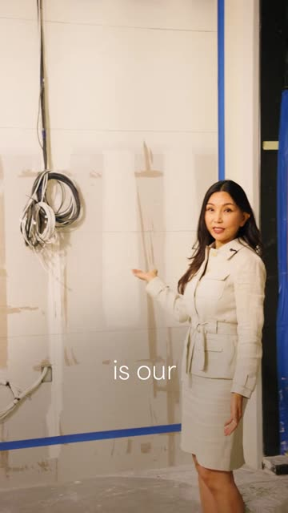
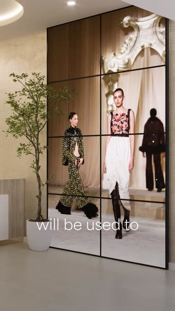
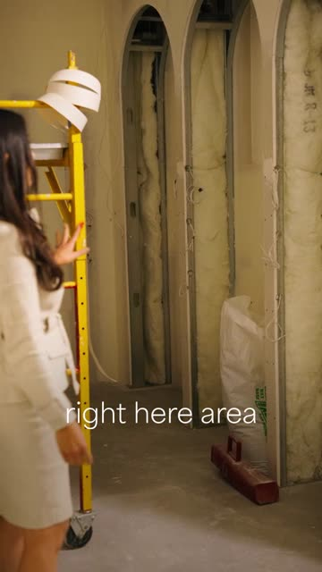
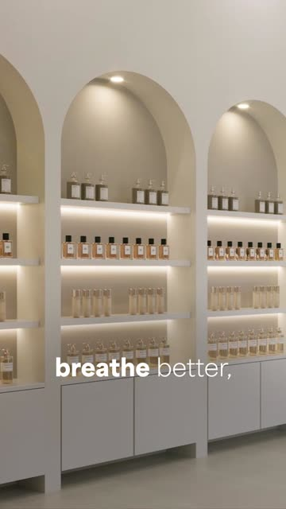

The premium tour.
Shot by shot.
This is the standard for every tour we edit from here on. Dr. Katherine Ahn walks us through a suite that is still under construction, and every raw room is answered by a rendering of the finished room on the exact word she names it. Study the angles, the grade, the renders and the captions, then build ours the same way.
- Client
- Dr. Katherine Ahn · Aviara Aesthetic, Beverly Hills
- Video
- Aviara #3: Dr. Ahn, Local Tour (Video 6 of 13)
- Format
- 9:16 vertical · 2160×3840 · 23.976 fps
- Runtime
- 2:33
- For
- Every Puro Flow editor (Yash, Adrian and the team)
Four rules for every tour
When we follow someone through a space, the camera has to feel expensive. That means stable, angled and moving for a reason.
Stable, always
Gimbal or locked off. If a clip shakes, stabilize it or cut it. No shaky handheld in a tour.
Never flat
Never park the camera square on the subject against a flat wall. Swing to a 3/4 angle, put something in the foreground (ladder, doorframe, scaffolding) and place them off-center.
No slow zoom in or out
No scale keyframes, no Ken Burns push in the edit. It reads boring and cheap. Movement comes from the camera (follow, arc, slide, reveal) or from the render, never from a digital zoom.
New room, new angle
Every time she names a space, cut. Back-to-back shots never share a framing, and every raw room gets its render.
Place, then before and after, then the why
Six beats. The tour earns the message: by the time she explains her philosophy, we have already seen the space become real.
Establish
Two drone shots: Beverly Hills at golden hour, then the building. No voice yet.
Arrive
Wide in the raw suite, punch in for "little tour", back wide for the entrance.
Raw → render
Reception, video wall, storefront. Each raw room cuts to its finished render.
The why
Consultation room. A black and white cutaway shows "most clinics", then root causes.
Clinical suite
The grade drops to low-key amber. Lab, treatment #2 and #3, each with a render.
Close
One 22 second talking head carries the message. Logo card on white curtains.
31 shots, each one playing
Every clip below loops the actual shot from the final edit. Read the camera note for what the shooter did and the edit note for what we did with it.
Three looks, one warm thread
The grade changes with the room, but it is never cold. Every shot reads warm (red above blue), whites go cream instead of blue, and the darkest room drops almost to black. The swatches and meters below are measured from the final export, darkest to brightest.
- Match renders to their room. The renders measure the same warmth as the high-key cream look, so they cut against the real footage without a jump.
- One exception on purpose: the "most clinics focus on treatment" cutaway at 0:59 is fully desaturated. Black and white means "the old way". Color comes back the moment she says what we do differently.
- The mood shift is the story. Bright and golden while we explore, low-key amber once we are inside the clinical suite. Grade the change in on the cut, not with a slow fade.
Show the room before it exists
The move that makes this video: she stands in a construction site, says the name of a room, and we cut to the finished room. Eight renders in 2:33. Here is how each pairing is built and how we make ours.




The workflow
- Shoot a clean plate. On shoot day, grab 5 seconds of every raw room with nobody in it, from the angle she will talk about it.
- Claude writes the prompt. Give Claude the design brief and the script line. It writes a render prompt with materials, light and palette, so every room matches.
- Higgsfield renders the room. Image to image from the plate, keep the walls and windows where they are, finish the space. Make 4 to 6 options and pick one.
- Higgsfield animates it. Image to video with one slow lateral slide, 3 to 5 seconds. Slide the same direction as the shot before it. No zoom.
- Grade and place it. Grade to the room's look, add the same grain as the camera footage, and cut in on the exact word that names the room.
Starter prompt (edit per room)
Photoreal interior of a luxury aesthetic and wellness clinic, [ROOM NAME], Beverly Hills. Keep the exact walls, window and ceiling from the reference image. Finishes: warm cream plaster, travertine and onyx accents, arched niches, oak, soft 3000K cove lighting, one olive tree. Calm, editorial, no people. Vertical 9:16, eye level, 24mm lens look.
Motion: slow lateral dolly left to right, 3-5 seconds, steady, no zoom, no camera shake, light stays still, cinematic.
- Use the brand's real logo on signage only when we have the file. Never let the AI invent lettering.
- Check every frame for warped lines, melted furniture and fake text before it goes in the timeline.
The finishing layer
Captions
- Two to three words at a time, white, thin sans serif, centered in the lower third. Never a full sentence on screen.
- Bold one key word per line: breathe, live, smile, sterilization, laboratory, foundation. The weight swap does the emphasis, no color.
- Big titles name the place: "little tour", "video wall", "treatment #2", "treatment #3". They fade up, hold, then ghost out.
- Hand-drawn marks for the big ideas: a circle around "root causes" (1:07), a scribble under "improve" (1:12).
Transitions and sound
- Hard cuts are the default. Effects are saved for room changes.
- Light leaks carry us between spaces (0:10, 0:14, 0:31).
- Whip blur moves us from the storefront to the consultation room (0:45).
- Foreground wipes: a dark doorframe passes the lens to enter the clinical suite (1:15) and treatment #2 (1:45).
- Practical flare sweeps across the dark room at 1:28.
- Voice first. The music bed measures about 11 dB under her voice and only comes up when she stops talking: the opening drones and the logo card.
| Time | Move | Why it works |
|---|---|---|
| 0:00 | Open on two drone shots, no voice | Beverly Hills at golden hour says luxury before she says a word. |
| 0:08 | Punch in on "little tour" | Same moment, new angle. The cut resets attention without leaving the room. |
| 0:13 | First raw room to render | Sets the pattern in the first 15 seconds, so the viewer waits for every reveal. |
| 0:59 | Black and white cutaway | Contrasts "most clinics" with her approach without saying anyone's name. |
| 1:15 | Grade drops to low-key | Tells you we are in the serious, clinical part of the space. |
| 2:08 | Longest shot saved for last | 22 seconds on her message. The tour already earned the attention. |
Editor checklist
Run every tour edit through this list before you post it for review. Checks stay on this device only.
Questions?
Watch the full video once with sound, then once with this page open. Drop your questions in Slack, tag Felipe, and include the shot number you are asking about.